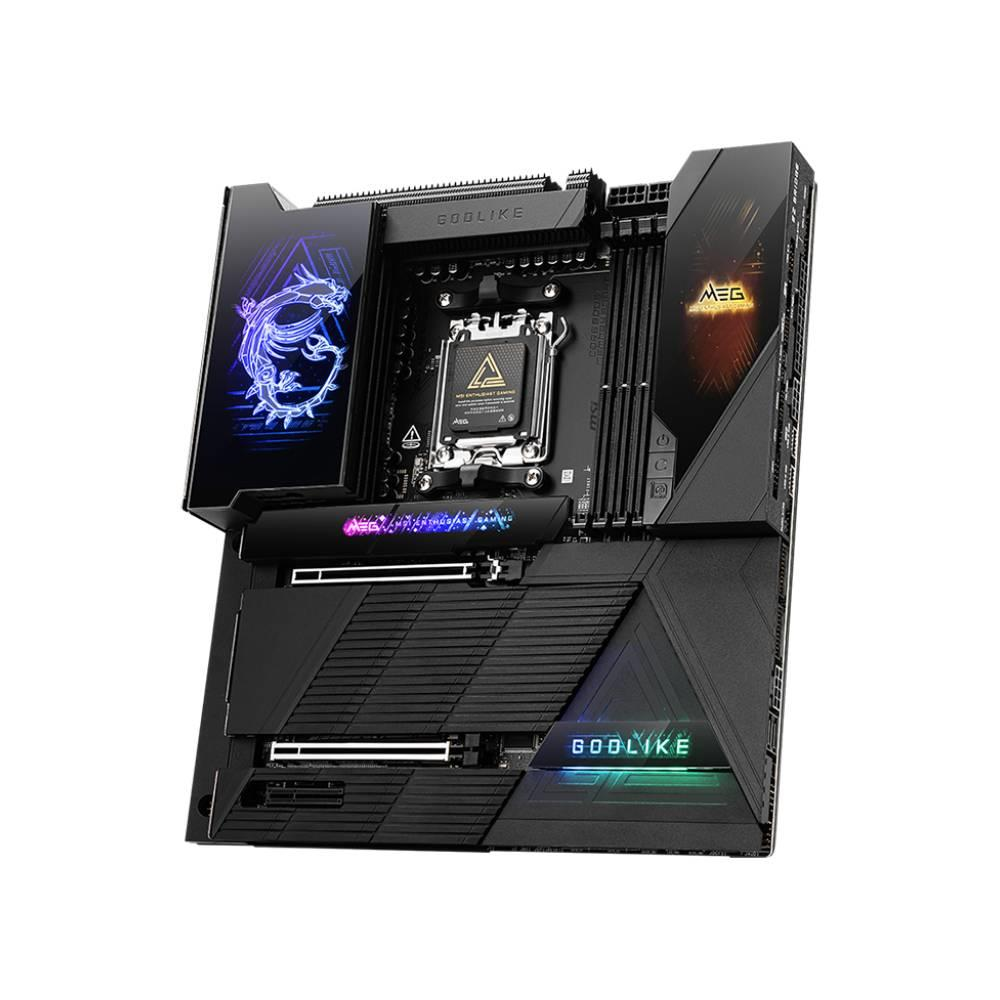

Sınırları zorlayan hız aşırtma (overclock), yapay zeka entegrasyonu ve ultra lüks donanım özellikleriyle dünyanın en güçlü anakartlarından biri.
| Özellik | Değer |
|---|---|
| Soket | AM5 (AMD Ryzen™ 9000 & 8000 & 7000 Serisi) |
| Chipset | AMD X870E |
| RAM | 4x DDR5 Slot (256GB’a kadar, 8000+ MHz OC) |
| PCIe | 2x PCIe 5.0 x16 Slot (x16/x0 veya x8/x8 modunda) |
| Depolama | 5x M.2 (Gen5 ve Gen4 desteği), 4x SATA 6Gb/s |